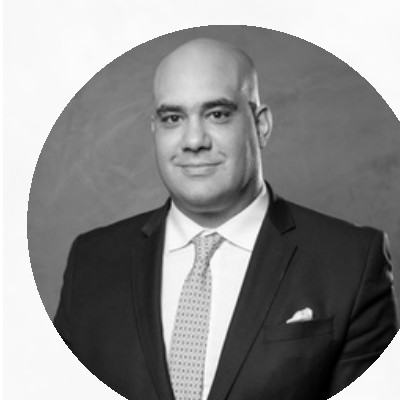
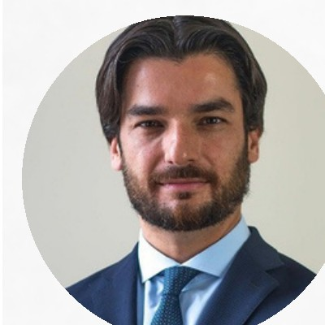
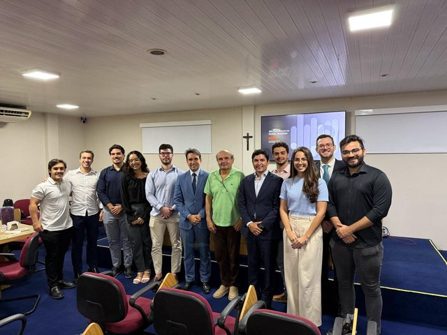
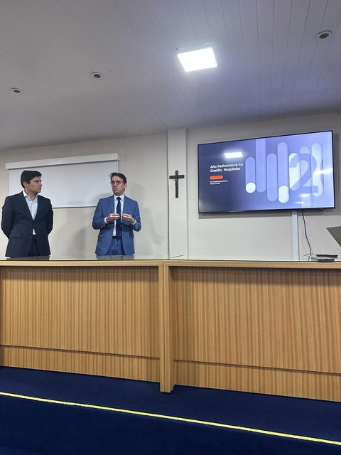
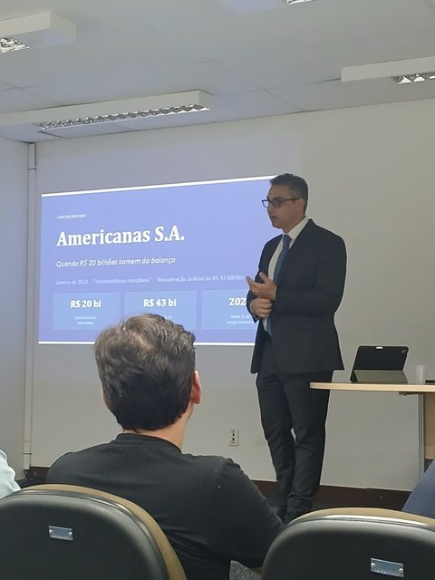
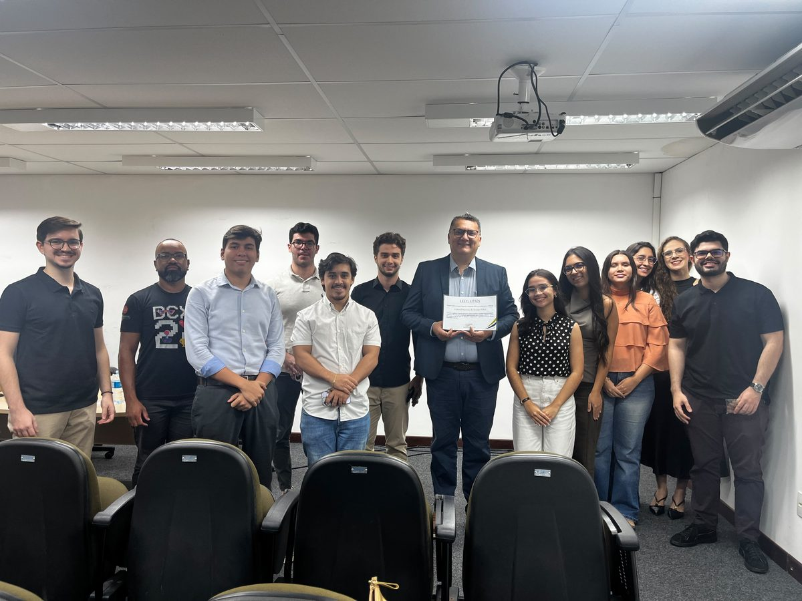
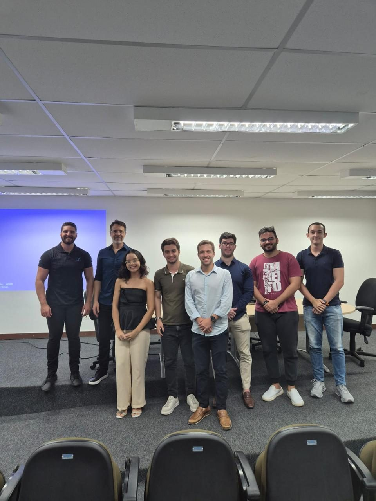

Liga de Estudos de Direito Empresarial e Societário
Nascemos da inquietação de quem queria ir além da sala de aula — e hoje conectamos a comunidade acadêmica e profissional ao universo do Direito Empresarial e Societário.
"Promover a disseminação do conhecimento e contribuir para a formação e o aprimoramento da comunidade jurídica e acadêmica nas áreas de Direito Empresarial e Societário."
O que é a LEDS?
A LEDS é um projeto de Pesquisa e Extensão do curso de Direito da UFRN, criado a partir da inquietação de alunos diante da necessidade de um maior aprofundamento em Direito Empresarial e Societário na formação oferecida pela instituição.
Assim, o projeto busca ampliar o contato dos estudantes com a área, promovendo debates, pesquisas e atividades acadêmicas que aproximem a teoria da prática jurídica.
Ao longo do caminho, percebemos que o Direito Societário, isoladamente, já não comportava nossas ambições: decidimos, então, abranger todo o universo do Direito Empresarial. Somos a Liga de Estudos de Direito Empresarial e Societário (LEDS UFRN).
- Fomentar o conhecimento teórico e prático — palestras, workshops e seminários com profissionais renomados, e promoção de estudos de caso
- Estimular o debate e a reflexão — grupos de estudos, debates e mesas-redondas sobre Direito Societário
- Divulgar e compartilhar conhecimentos — produção acadêmica e oferecimento de treinamentos e capacitações
Nossa Equipe
A estrutura responsável pelas atividades e coordenadorias da liga neste mandato.

Dr. André Elali
Advogado, sócio-fundador do André Elali Advogados e professor titular da UFRN. Especialista em Direito Tributário, mestre em Direito Político e Econômico e doutor em Direito Público, com estágios de pesquisa em centros como o Max-Planck-Institut, a Queen Mary University of London e a Universidade de Lisboa.

Dr. Luís André Negrelli
Advogado, sócio do escritório Eizirik Advogados. Especialista em Direito Societário pela FGV/SP, doutor em Direito Comercial pela USP/SP e professor da FGV Direito SP e do IBMEC/SP. Pesquisador bolsista do Max-Planck-Institut, em Hamburgo, e professor visitante na Università degli Studi di Firenze, Itália.
Coordenação Geral
Responsável pela visão institucional da LEDS, pelas parcerias da liga e pela gestão interna e externa do projeto.
Desenvolvimento Humano
Cuida da cultura organizacional da liga e do desenvolvimento e bem-estar dos seus membros.
Eventos
Organiza os expedientes da liga e viabiliza a participação da LEDS em simpósios, seminários e eventos externos.
Mídias Sociais
Cuida da presença da LEDS nas redes sociais, dando visibilidade às atividades e fortalecendo o posicionamento da liga.
Pesquisas
Incentiva a produção científica dos membros — da escrita de artigos ao livro anual da LEDS — e contribui para o debate acadêmico em Direito Empresarial e Societário.
Expedientes Externos
Os Expedientes Externos são encontros nos quais profissionais do Direito e professores dialogam com os membros sobre temas de Direito Empresarial e Societário — por meio de exposições teóricas ou da análise de casos concretos.

Resolução de conflitos na Junta Comercial: análise casuística da dissolução parcial de sociedades
Com Dr. André Santa Cruz e Dra. Amanda Mesquita — uma análise prática da dissolução parcial de sociedades, abordando a competência das Juntas Comerciais, o direito de retirada, a apuração de haveres do sócio retirante, o papel do DREI e os procedimentos de registro empresarial.

Estrutura societária e compliance — case Hospital Memorial
Convite do Dr. Hindenberg Dutra para conhecer um case de sucesso junto à equipe do Hospital Memorial — organização societária, modelo de gestão e práticas de compliance voltadas à segurança jurídica e administrativa.

Noções introdutórias de Contabilidade
Com Anderson Dantas e Carlos Braga, da Braga e Dantas Advogados — contabilidade aplicada ao Direito Empresarial e Societário, com abordagem tributária: balanço patrimonial, DRE, DFC, valuation e escrituração fiscal (ECD, ECF, EFD).

Apuração de Haveres: Critérios Científicos e Standards de Controle Judicial
Palestra com Dr. Gabriel Martins de Araújo sobre os critérios técnicos e os parâmetros de controle judicial aplicados à apuração de haveres em dissoluções societárias.

Noções iniciais e natureza do direito societário
Com Arthur Araújo, da LBA Advogados — os fundamentos e a natureza jurídica do Direito Societário na prática do mercado.
Outros expedientes
Expedientes Internos
Encontros periódicos voltados ao aprofundamento acadêmico, capacitação e integração dos membros — nos quais os próprios integrantes da LEDS ministram aulas, apresentações e discussões sobre temas relevantes do Direito Empresarial e Societário, estimulando o protagonismo acadêmico e a formação técnica dentro da liga.
Fundamentos do Direito Empresarial e a Teoria da Empresa
Conduzido pelo membro Raio Avelino, um dos fundadores da LEDS.
Outras iniciativas da LEDS
Produção de artigos científicos
Elaboração e desenvolvimento de artigos acadêmicos, promovendo o aprofundamento em temas relevantes, o pensamento crítico e a pesquisa jurídica.
Livro anual
Anualmente, a LEDS organiza a publicação de um livro acadêmico, reunindo produções científicas desenvolvidas por seus membros.
Oficinas práticas
Oficinas voltadas ao Direito Societário e Empresarial, para aplicar conhecimentos teóricos em situações próximas à realidade profissional.
Conteúdos
Artigos, análises e opiniões produzidos por membros da liga.
Nosso primeiro livro está a caminho
O primeiro livro da LEDS está em desenvolvimento pelos nossos membros. Em breve, os conteúdos publicados vão aparecer aqui.
Faça parte da LEDS
[Texto de chamada — ex: A cada semestre, a LEDS abre um novo processo seletivo para estudantes de Direito da UFRN interessados em Direito Empresarial e Societário.]
Inscrições
[Preencher formulário de inscrição dentro do período divulgado.]
Carta de apresentação
Novidade deste semestre: no lugar do mini-artigo de 2 páginas, os candidatos escrevem uma carta de apresentação. [Detalhar tema ou diretrizes da carta.]
Entrevista
[Conversa com membros da diretoria sobre motivação e disponibilidade.]
Resultado
[Divulgação dos aprovados e integração à liga.]
[Período de inscrições: DD/MM a DD/MM]
Inscreva-seEdital do Processo Seletivo
Consulte as regras completas, critérios de avaliação e cronograma detalhado.